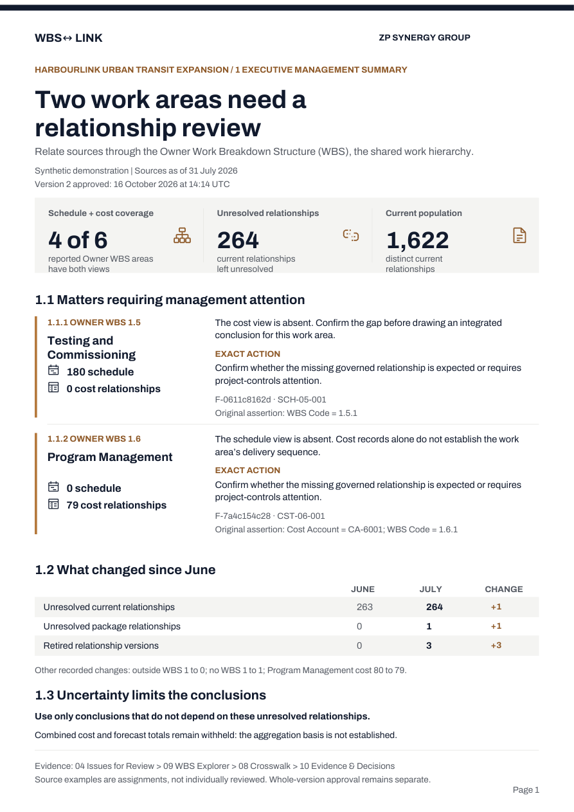
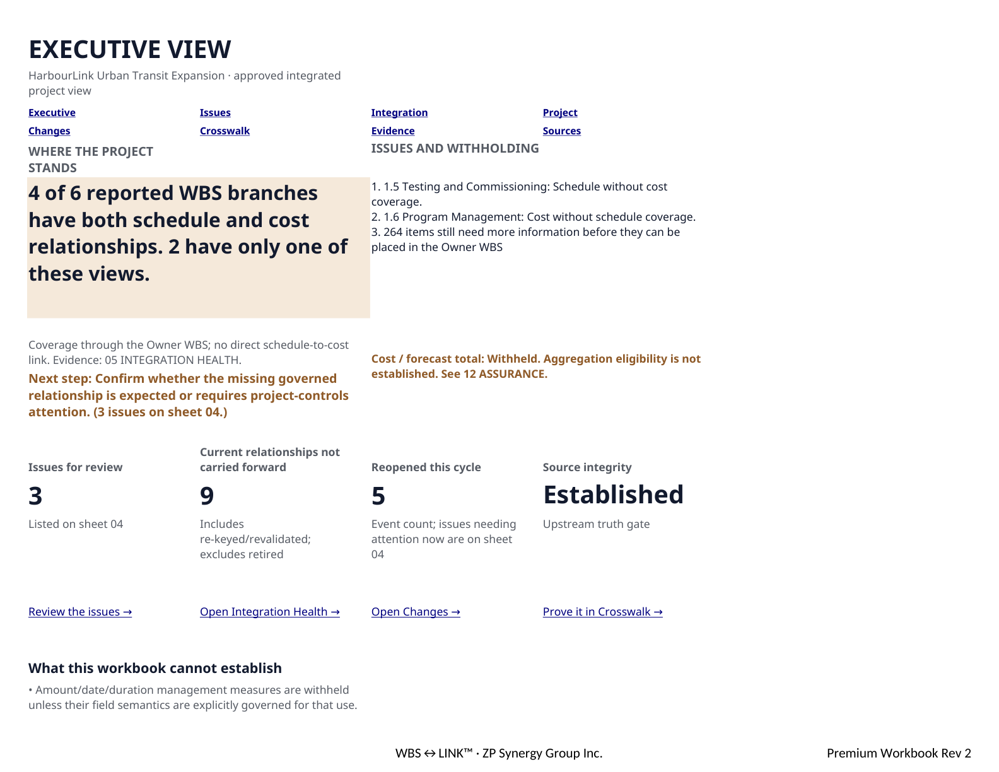
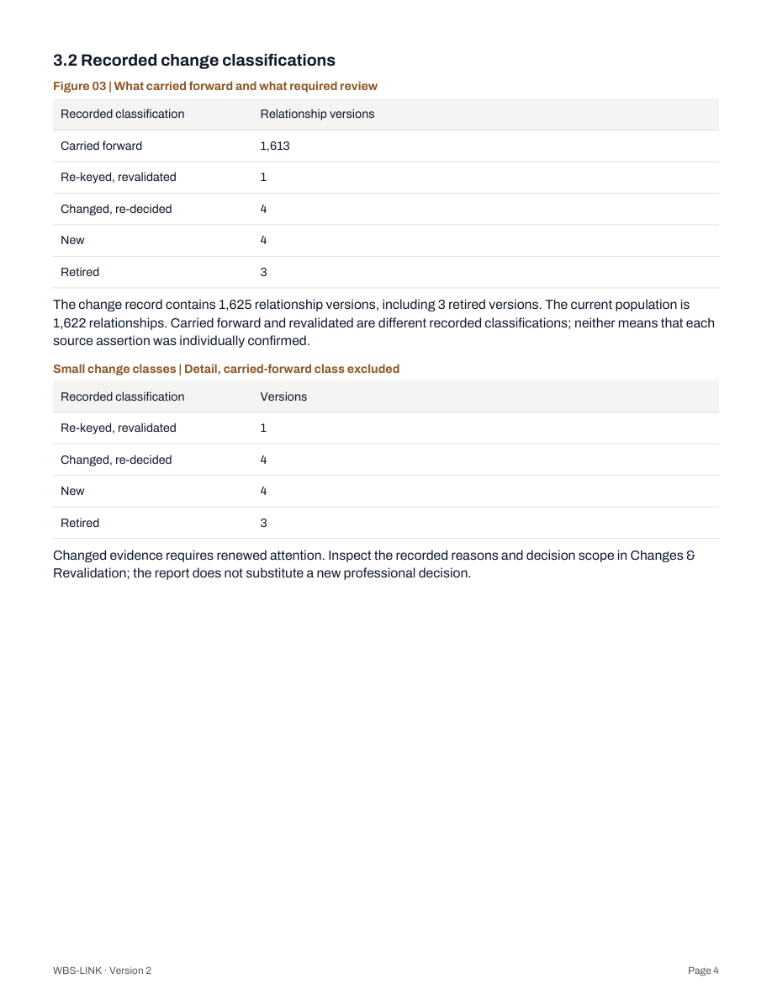

Source systems
Scheduling, cost and contract systems retain authority for their own data.
PROJECT CONTROLS THROUGH THE OWNER WBS
WBS↔LINK relates schedule, cost and package records through the Owner WBS. See the approved position, identify gaps and follow the evidence behind professional decisions.
HarbourLink is a fictional, approved example. Start with a finding, inspect its source assertion, interpretation and professional decision, then compare Cycle 2.
Private evaluation. Your team retains professional approval authority.
WHY THIS IS DIFFERENT
Schedules follow delivery sequence. Cost follows control accounts. Packages follow commercial scope. A shared label does not establish a shared relationship.
Scheduling, cost and contract systems retain authority for their own data.
Useful for analysis and joins. Relationships, uncertainty and changes still need governance.
Useful for exploring data. WBS↔LINK retains the evidence and reviewed relationships into the next cycle.
Useful where stable. Revisions still require evidence-based revalidation.
THE INTEGRATION SPINE
Schedule, cost and contract records are reviewed against the Owner WBS without replacing the original files.
Schedule · Cost / forecast · Package / contract
Independent relationships. Professional review and approval.
Position · Issues for review · Source evidence
Original structures remain visible.
Unproven links remain open.
Your team reviews and approves.
Keep what still holds.
HARBOURLINK · APPROVED POSITION
HarbourLink Cycle 2. The approved relationships locate the gaps; a professional determines what they mean.

COVERAGE THROUGH THE OWNER WBS
Coverage is not project health. Three issue groups require professional attention; quantitative totals remain withheld.
Professional Action · exact governed wording
Confirm whether the missing governed relationship is expected or requires project-controls attention.
Source: HarbourLink Cycle 2 Integrated Management Report. Approval remains with a named professional.
View Management ReportDownload print reportDownload phone report

FOUR CHARTS · PROFESSIONAL EVIDENCE
Coverage, current relationships, cycle movement and unresolved outcomes. Each chart keeps its own population and denominator.
6 reported Owner-WBS branches. Coverage is not project health.
Inspect original native workbook chartRelated to WBS · Outside WBS · Unresolved. Outcomes and source totals are labelled directly.
1,622 current relationships; retired excluded; split targets counted once.
Inspect original native workbook chart1,625 relationships, retired included. Carry-forward and revalidation are distinct.
Inspect original native workbook chart1,622 current relationships; retired excluded. UNSURE, NEW_SCOPE and NO_WBS remain distinct.
Inspect original native workbook chartShown using the fictional HarbourLink practice project, not client project data.
THE NEXT REPORTING CYCLE
When revised source files arrive, supported relationships can carry forward. Changed evidence comes back for review.
The review remains traceable from one reporting cycle to the next.

VIDEO 1 · THE CHALLENGE
See how different reporting structures complicate a single view of project delivery.
Licensed instrumental music with restrained, picture-matched workplace and equipment sounds. Designed sound, not audio captured on the shown site. Captions are optional through CC.
VIDEO 2 · HOW WBS↔LINK WORKS
Follow the files through source review, professional decisions, approval, reporting and the next cycle.
Licensed rhythmic instrumental music beneath the evidence walkthrough. Captions are off by default; use CC to enable them.
STANDARD FIRST-RUN EXPERIENCE
HarbourLink is a fictional infrastructure project with an Owner WBS, contractor schedule, cost forecast and package register for two reporting cycles.
Read the approved synthetic Cycle 1 finding before configuring sources. Inspect its own evidence, then compare the recorded Cycle 2 position.
Blind package only. No answers, scoring keys, hidden truth or oracle material are included.
PRIVATE PRODUCT OWNER PREVIEW
Start with the read-only approved synthetic example. Follow the finding, source assertion, recorded professional decision and separate approval. The same report and workbook are available in both cycles.
Existing private preview entry
Isolated evaluation environment, not a production or confidential-data service. Use synthetic practice data only; do not upload real project, employer or client information.
CONTROLLED PRIVATE DEMONSTRATION
Start with a short consultation about your project-controls requirements and whether a controlled demonstration would help. Keep confidential project data outside this evaluation.
Request a consultationCOMMUNITY / BENCHMARK / RESEARCH
The benchmark remains available for practitioners who want to test their own method. It is a community research surface, not the definition of the product.